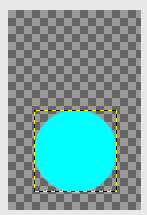

⇨新建图层
快捷键： Ctrl+Shift+N
此命令会打开创建新图层对话框，允许您在图层堆栈中添加一个新的图层，位置在当前活动图层的上方。
图层⇨新建图层
在标题紧挨着的下面，会显示创建这个新图层的图像文件的名称，在标题右侧会显示当前图像的缩略图。
图层名字
就是图层的名称。没有任何实际功能，只是方便您记忆。
颜色标签
点击其中一个颜色按钮后，创建好的图层的眼睛图标会显示这个背景色。如果图像中有很多个图层，这个功能可能会很有用。
模式
即图层混合模式Blend mode，默认模式是正常。
下拉列表中包含了所有的图层混合模式。在其右侧，另一个下拉列表可以选择默认或过时模式组。
图层混合模式的详细说明，请参考菜单【可停靠对话框⇨图层➡模式】。
混合空间 Blend space
图层模式使用的空间。此选项目前不可用。
合成空间 Composite space
默认是自动，您可以改为RGB线性或者RGB感官。
线性光通道编码 反映现实世界中光波合并的方式，简称为线性。
感官统一通道编码 反映我们的眼睛对亮度变化的响应方式，简称为感官。
合成模式 Composite mode
高级用户
图层的模式(有时也称为它的混合模式 Blend mode：正常、相乘等)决定了图层和它的背景的色值如何组合；而图层的合成模式Composite mode决定了图层和它的背景在组合时，如果某个叠加区域一层是全透明，另一层不是全透明时，应该如何处理。(图层的背景是图层的下面的图像内容，即它下面的所有可见图层的组合)。
在图层与它的背景合成Compositing时，可以分为几个区域：一是背景的非全透明区域，二是图层的非全透明区域，这两个我们暂时统称为上下不透明区域；三是背景的透明区域，四是图层的透明区域，这两个我们暂时统称为上下透明区域。
图层的混合模式Blend mode决定了如何组合上下不透明区域的交集的颜色：即图层与其背景所共同的非全透明区域(非共同区域的像素不需要任何组合，只需要保留它们的原始颜色即可)。
图层的合成模式Composite mode决定了上下不透明区域与上下透明区域相交时，哪些区域要保留，哪些区域要舍弃。
图层的合成模式Composite mode只对上下图层的相关区域做保留/删除的决定，不需要对上下图层的颜色进行混合，因为凡是与此命令相关的上下图层区域，必定有一个是全透明，没有颜色。
驿窗注：
对于合成模式Composite mode的这几个选项，您可以尝试使用集合的概念来理解，尤其是第二种和第五种，是典型的并集和交集。
合成模式示例
下面的图像是用来演示合成模式Composite mode效果的原图，一共有三个图层，从上到下图层名称分别为上层、下层、其它。
演示使用的原图
对于图层堆栈中最上面的上层图层，我们把模式Blend mode设置为相加模式，然后对此图层应用五种不同的合成模式Composite mode，查看效果有什么不同。
下面是五张效果图片，从左到右依次为：
模式=相加 ； 合成模式=自动
模式=相加 ； 合成模式=联合
模式=相加 ； 合成模式=剪辑至背景
模式=相加 ； 合成模式=剪辑至图层
模式=相加 ； 合成模式=交集
(点击可以看原图)
{kind=link}
{kind=link}
{kind=link}
{kind=link}
{kind=link}
上面五张图片中，您会发现第一张(自动)和第三张(剪辑至背景)效果完全相同。这是由于自动模式的规则所导致。
合成模式Composite mode选择自动模式时，GIMP会根据图层的模式Blend mode的变化，来自动匹配相对应的合成模式Composite mode：
模式Blend mode为正常、融化、合并三种情况时，会匹配联合；
上面三种之外的其他模式Blend mode，会匹配剪辑至背景。
某些模式Blend mode可能不支持合成模式Composite mode效果，所以不做匹配。
第一张图合成模式Composite mode设置的是自动模式，所以GIMP会根据模式Blend mode来进行匹配；而模式Blend mode选择的是相加，所以，根据匹配规则，匹配成剪辑至背景；从而导致自动模式与剪辑至背景模式效果完全相同。
不透明度
设置图层内容的不透明度，默认为100%。
宽度/高度
设置新图层的尺寸。刚打开对话框时，这些值会默认为图像的尺寸。您可以修改这两个尺寸值。另外，您还可以在右边的下拉菜单中修改单位。驿窗注：
GIMP中，图层尺寸可以等于、大于或小于图像尺寸(画布尺寸)，详细说明请参考本小节结尾的图层尺寸示例。
位移X/位移Y
新图层使用的默认的原点是图像画布的左上角，默认位移值是0。您可以调整图层的位置，文本图层可能经常会用到。此调整非常精确。
填充
对图层进行颜色填充，与菜单【新建(N)】一样，有五个选项：前景色、背景色、白色、透明、图案。
交换
在对话框的右侧，还有一些开关，这些开关是图层特性，可以在创建完图层以后随时设置：
高级用户
图层尺寸示例
图像尺寸等同于画布尺寸。图层尺寸有可能与画布尺寸不同。
我们创建一个示例图像，如下：

图层尺寸示例
上图有以下要素：
图像尺寸：400x600像素，纵向，透明背景；
在图像上画一个正圆，填充色值为 R=0,G=100,B=100；
画好正圆后，选中背景图层，按Ctrl+Shift+D(复制图层，生成副本)；
选中堆栈中的上方图层；
现在，我们来看一下图层尺寸如何区别于画布尺寸：
图层尺寸小于画布尺寸
上方图层处于选中状态，点击菜单【图层⇨裁剪到内容】，前后变化如下面所示：
请注意两图中的黑黄虚线框，黑黄虚线框表示图层边界线。左图为执行菜单【图层⇨裁剪到内容】之前，右图为执行之后。
GIMP有一个功能，就是当选中图层堆栈中的某个图层时，图像窗口可以显示该图层的边界(如果未显示图层边界，请勾选菜单【视图⇨显示图层边界】)。所以，上面第4条要素选中上方图层时，我们应该能够看到被选中图层的边界线。
左侧的图层是由背景图层复制来的，背景图层是创建图像时默认创建的，所以，左侧图层的尺寸=背景图层尺寸=图像尺寸(画布尺寸)。此时显示的图层边界，等同于画布的边界。
右侧的图层，是左侧图层执行菜单【图层⇨裁剪到内容】命令得来，其画布尺寸不变，但图层尺寸变小(黑黄虚线框变小为环绕正圆的矩形)。
左侧图：这是我们在上方图层执行了菜单【图层⇨裁剪到内容】命令之后，画了一个矩形选区。
中间图：这是对矩形选区填充了白色(图层堆栈中选择上方图层，上方图层边界框只包含正圆区域，且上方图层已经执行了菜单【图层⇨裁剪到内容】命令)。
右侧图：这是保持矩形选区不动，但图层堆栈中选择了下方图层，下方图层边框包含全部区域，然后对矩形选区填充白色(上方图层需要设置为不可见：图层堆栈中点击上方图层左侧的眼睛图层，不显示眼睛图层即表示图层不可见)。
对比可以看出，图层边界框以外的区域，是无法填充颜色的。
{kind=link}
{kind=link}
{kind=link}
{kind=link}
{kind=link}
图层尺寸大于画布尺寸
上面我们演示了图层尺寸小于画布尺寸的情况，图层尺寸大于画布尺寸同理。
需要注意的是，如果图层尺寸大于画布尺寸，那么，只有勾选了菜单【视图⇨显示全部】后，才能看到画布边界区域以外的图层内容。请参考下面示例：
在前面的图层尺寸示例图像中，我们修改前景色为R=100,G=0,B=100，并设置上方图层不可见，然后选中下方图层，点击菜单【图层⇨图层边界大小】，宽度从400改为600，下面的填充设置为前景色，然后点击改变大小按钮。
左侧图：未勾选菜单【视图⇨显示全部】右侧图：已勾选菜单【视图⇨显示全部】右侧图中，外围大的正方形黑黄虚线框，是图层边界线。品红色矩形左边缘的纵向虚线(青色正圆右侧)，是画布的右边界线；如果取消勾选菜单【视图⇨显示画布边界】，那么，这条纵向虚线会变成不可见。
{kind=link}
{kind=link}